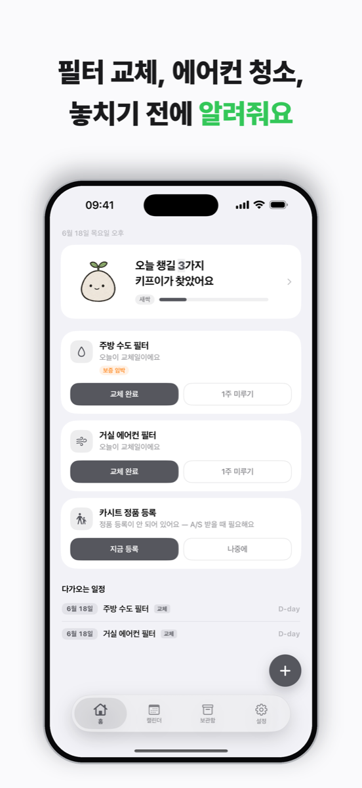
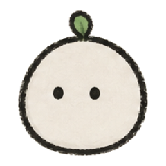
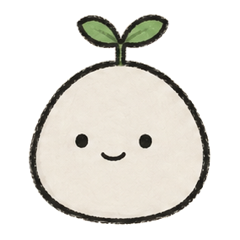
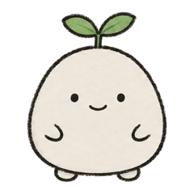
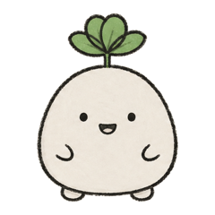
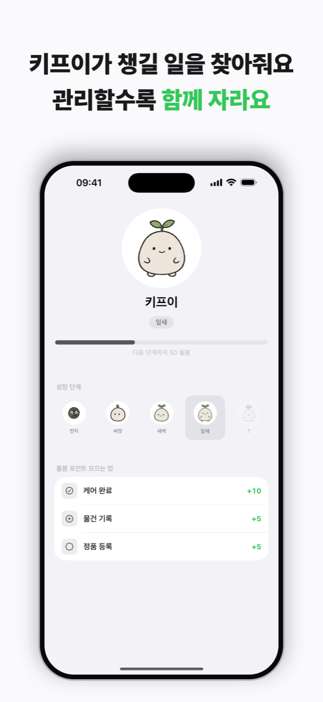
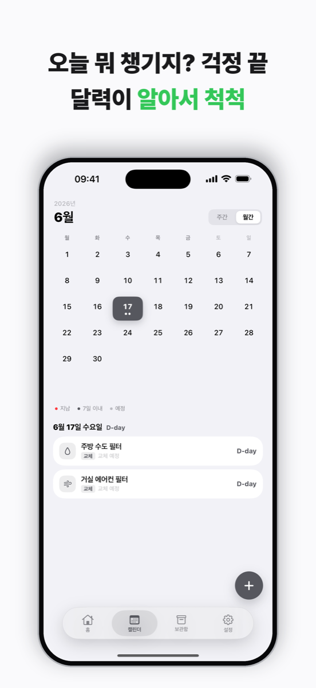

필터 교체, 보증 만료, 정품 등록, 청소 주기 — 잊어버리기 쉬운 우리 집 물건 관리를 한곳에. 갈 때가 되면 everykeep이 대신 기억하고 조용히 알려줘요. 무료, 그리고 기록은 기기 밖으로 안 나가요.

물건과 주기를 등록해요 — 3개월마다 필터, 내년에 끝나는 보증처럼.
날짜를 추적하다가 때가 오기 전에 알려줘요 — 30·7·1일 전, 원하는 대로.
완료를 누르면 다음 날짜가 자동으로. 키프이도 한 뼘 자라요.
물건을 등록하거나 할 일을 끝낼 때마다 키프이가 돌봄을 얻어 한 단계씩 자라요 — 씨앗에서 활짝까지. 잔소리 없이, 잘 챙긴 마음만 차곡차곡.

갓 심은
시작
자라기 시작
30 P
한창 크는 중
70 P
활짝 핀
150 P모든 물건에 신호등 하나. 여유 있음·곧 임박·지남 — 뒤질 것도, 엑셀도 없이.
기록돼 있고 순조로워요.
알림 범위 안에 들어왔어요.
이제 챙길 때예요.


모든 기록이 내 아이폰 안에만. 계정도, 기기 밖으로 나가는 분석도 없어요.
물건마다 30·7·1일·당일 알림을 골라서. 원하는 만큼만 챙겨요.
기록하고 완료할수록 한 단계씩 자라는 손그림 정리 동반자.
이번 주·이번 달 챙길 일을 깔끔한 타임라인으로.
보관함에서 물건별 남은 수명을 링으로. 초록·앰버·완료.
사진 첨부, 보증·정품 등록일 저장, 영수증도 나중에 바로.